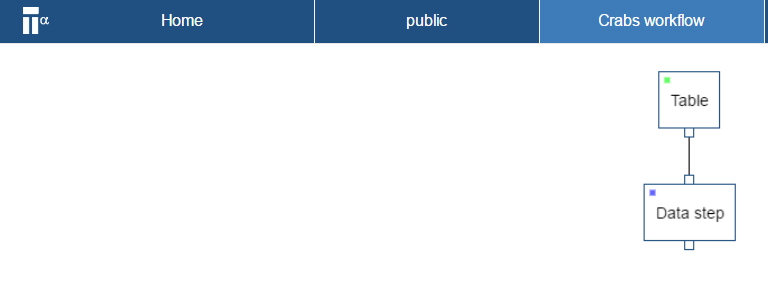

Chapter 4 Get started
This step-by-step guide outlines how to upload, view, compute and share data using TercenCloud. it uses a data set of morphological measurements on Leptograpsus Crabs collected at Fremantle, W. Australia.
4.1 Get the data
The data set for this guide is available online as a git hub repository. It is found at https://github.com/tercen/getting_started/tree/master/crabs/data and download it to your local drive.
Crab data description:
The dataset is called “crabs” and it is in a long format. It is composed of four groups (two sexes and two species) of 50 measurements for five traits variables, FL (frontal lobe size in mm), RW (rear width mm), CL (carapace length mm), CW (carapace width mm) and BD (body depth mm). In summary it is:
| Factor | values |
|---|---|
sp |
species, B or O for blue or orange. |
sex |
M or F |
index |
index 1 to 50 within each of the four groups, 2 sex and 2 species |
variable |
one of five variables: FL, RW, CL, CW and BD |
measurement |
the value of one of the five variable |
4.2 Upload the data
In this section you upload an example data set.
TercenCloud accepts data in either .tsv or csv. These data set crabs_longformat.csv is in a .csv and is in a long format.
4.2.1 Go to the project page by clicking on the public project
You may already have a personal project area, in which case go this project.
4.2.2 Click on Create a data set
A dialog window opens which allows you to select the data file.
4.2.4 Click Next
You see what column headers were detected and their associated type.
4.2.5 Click OK
You will now see the new data set in the project page.
4.3 Creating a workflow
In this section you create a workflow.
4.3.1 Go to the project page
4.3.2 Click on Create a workflow
A dialog window opens which allows you to select the data file.
4.3.3 Please fill in the Name with the name crab workflow
The following information is possible: * Name (Mandatory) * Description (Optional) * Wiki Link (Optional)
4.3.4 Click Next and then click OK
You will now have an empty workflow page titled Crab workflow you gave it.
4.3.5 Right click in the workflow page and select Add step
4.3.6 Select Table and click OK
A new step named Table should appear on your worklow page.
4.3.7 Right click on the Table step and select Run
A window appear allowing you to select the data sets which are available. Select the crab data set you have uploaded.
4.3.8 Select data set and click OK
The Table step should now be green.
You have now successfully imported you data sets into the workflow.
4.4 Defining a view
In this section you create a visual. Once you have imported your data into the workflow now you can configure a projection.
4.4.1 Right click on the Table step and select Add step
4.4.2 Select Data step and click OK.
Your workflow should look like: 
4.4.3 Double click on the data step
A projection page opens
The projection page is composed of different zones. The main zones are highlighted in green below:

You can create any projection by dragging-n-dropping of items in the factors list to the different zones (indicated by the color green) of the projection page. There are four zones on the right and three on the left.
On the right are:
- y-axis zone
- x-axis zone
- column zone
- row zone
on the left are:
- label zone
- colors zone
- error bar zone
4.4.4 Drag-n-drop the measurement factor to the y-axis zone
4.4.5 Drag-n-drop the variable factor to the row zone
4.4.6 Drag-n-drop the index and sp and sex factor to the column zone

The image should look like the one above. Notice, the variable are the row and the observations are the columns.
4.4.7 Drag-n-drop the measurement to colors zone
4.4.8 Select heatmap in the drop down menu where it currently says point
The projection window should now show the following:

4.5 Computing
In this section you perform a computation. The projection you created in the previous section can also be used by a computation (i.e. operator). This is due to the What you see is what you compute paradigm. The following steps outlines how to add an operator.
4.5.1 Click on the Operator tab
4.5.2 Go to the Public tab and select the PCA operator, click OK
4.5.3 Click on the save icon of the Data step page bar
The save icon (see red circle in figure below) will disappear once it is saved 
4.5.4 Go to the workflow page
4.5.5 Right click on the data step and select Run
The the data step status color will now go from blue to red (i.e in progress). Wait until the status goes to green (i.e completed).
4.6 Visualizing the result
In this section you visualize the output of your previous PCA computation. The visual uses two principal components in a pair-wise plot.
4.6.1 Right click on the data step and select Add step
4.6.2 Choose a Data step and click OK
4.6.3 Open the newly created data step
A new projection page opens. This projection page should be familiar as you have seen this before in the previous steps of the this guide. However you will notice there are additional factors in the factor list, namely PC1, PC2, etc..
4.6.4 Drag-n-drop the PC2 factor to the x-axis zone
4.6.5 Drag-n-drop the PC3 factor to the y-axis zone
4.6.6 Drag-n-drop the sex and species factor to the colors zone

4.7 Visualizing a pairwise
In this section you create a multi-group pairwise visual.
4.7.1 Click on the first data step and select Add step
4.7.2 Choose a Data step and click OK
This will create a second data step (see workflow screen shot below)
4.7.3 Open the newly created data step
A new projection page opens. We will now create a pairwise projection of the variable.
4.7.4 Drag-n-drop the variable factor to the column zone
4.7.5 Drag-n-drop the variable factor to the row zone
4.7.6 Drag-n-drop the index and species factor to the label zone

This is the first pairwise projection, however these projection can be further developed into multi-group pariwise.
4.7.7 Drag-n-drop the sex factor to the column zone
4.7.8 Drag-n-drop the sp factor to the color zone
You have now completed the multi-group pairwise. This view is a powerful projection.
Your workflow should look like the following: